До 25.04.86
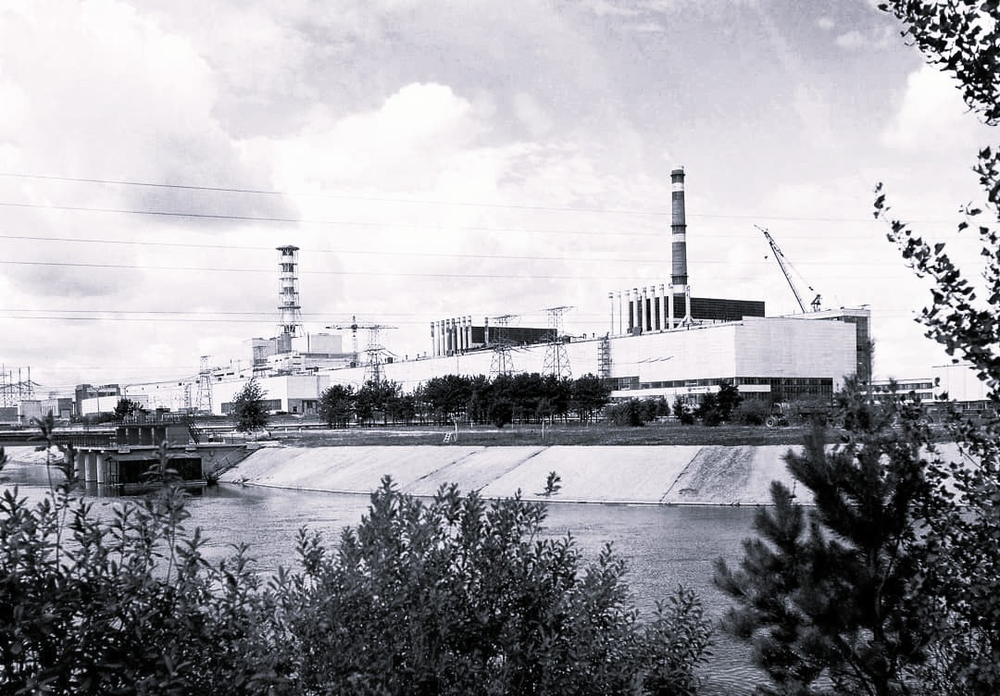
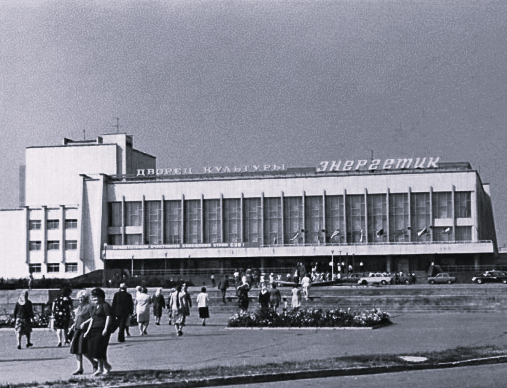
Чернобыльская АЭС расположена вблизи от р. Днепр на р. Припять. В 1986г. - это крупнейшия энергетический узел мощностью 4 мил кВт. Первый энергоблок запущен 26 сентября 1977г., послейдующие - в декабре 1978, 1981 и 1983гг. соответственно. Вместе со строительством станции рос и формировался коллектив эксплуатационников. Особых проблем с обслуживающем персоналом не было, думаю, ввиду хороших перспектив на получение квартиры и местоположения станции. В реакторный цех на первый блок в основном пришли люди с подобных по устройству так называемых промышленных реакторов. Они и составели косяк .
Станция работала вполне удовлетворительно. До 1986г. была одна серьёзная авария - разрыв технологического канала на первом блоке в 1982г. Она привела к длительному ремонту и значительному облучению ремонтного персонала. В пределах нормы для работающих на станции.
25.04.86 13:05:00
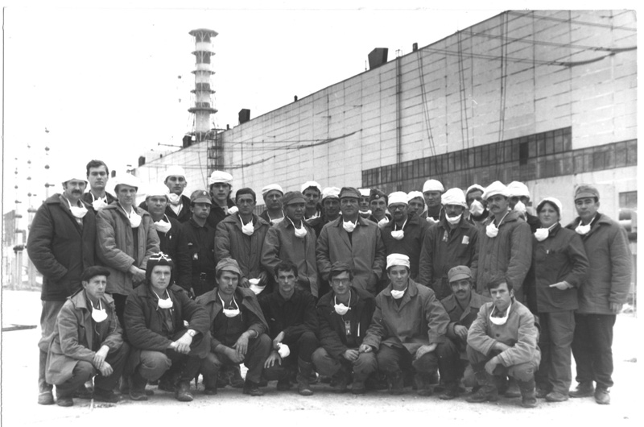
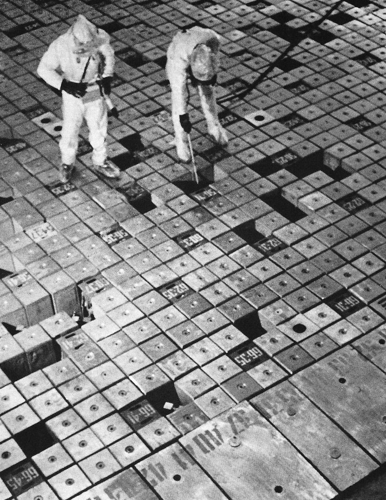
25 апреля 1986 года в 13:05 на Чернобыльской АЭС начался запланированный процесс остановки 4-го энергоблока для проведения профилактических работ. Эта остановка была частью регулярных плановых мероприятий по техническому обслуживанию и подготовке реактора. В ходе этих работ сотрудники выполняли проверки, настройки оборудования и тестирование систем безопасности, чтобы обеспечить стабильную работу реактора и предотвратить возможные аварийные ситуации в будущем.
25.04.86 23:10:00
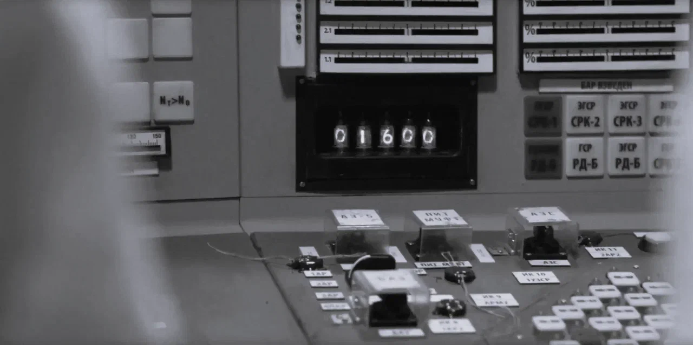
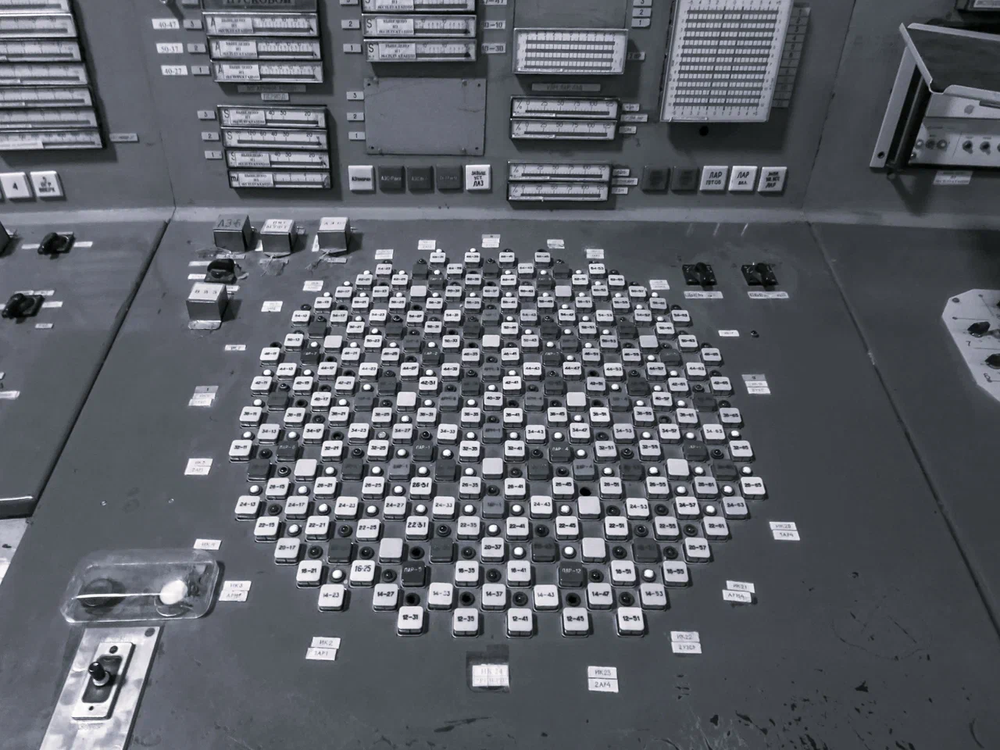
На 25 апреля 1986 года, в 23:10, на Чернобыльской АЭС запланировано было начать снижение мощности 4-го реактора с 3200 МВт до 1600 МВт в рамках стандартных процедур подготовки к завершению плановых работ и мягкому останову реактора. Это была часть подготовительных мероприятий, предназначенных для безопасного снижения мощности перед окончательной остановкой реактора после завершения профилактических работ.
Снижение мощности происходило в соответствии с установленным режимом работы, что позволяло инженерам проверить работу систем управляемости и охлаждения, а также подготовить оборудование к полной остановке.
26.04.86 00:28:00
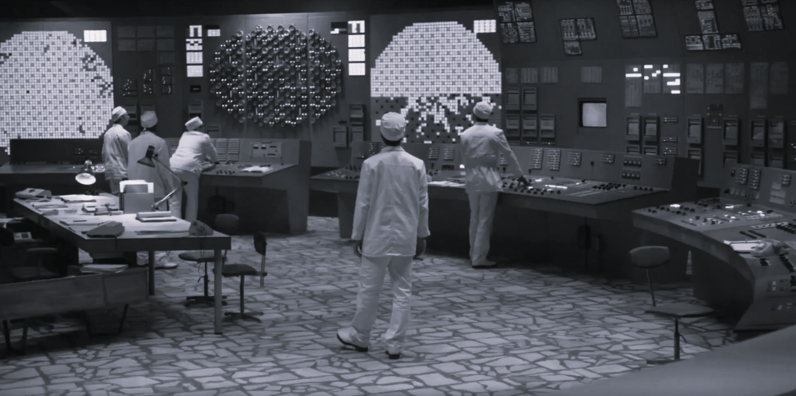
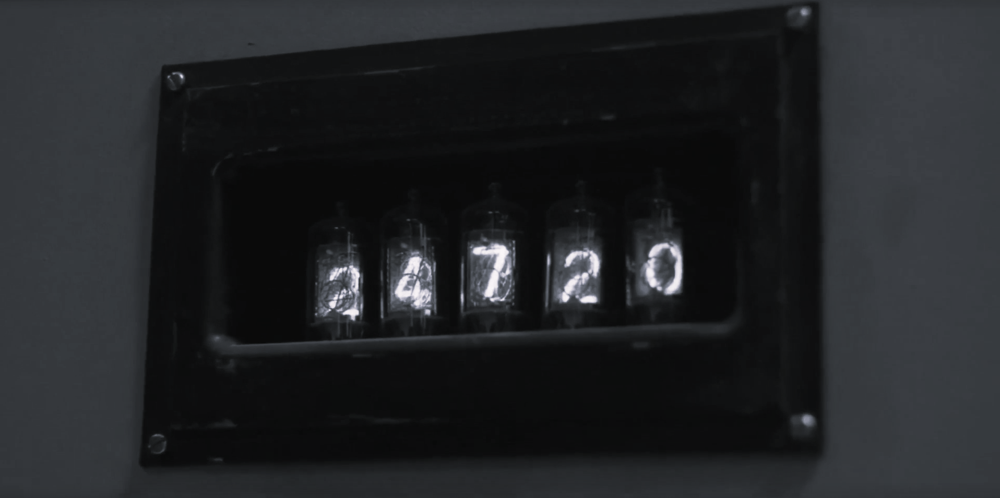
На 26 апреля 1986 года, в 00:28, на Чернобыльской АЭС произошло критическое событие — реактор начал самопроизвольно разгоняться. Это произошло в результате несоответствия в управлении реактором и ошибок в ходе тестовых процедур, которые проводились на реакторе №4.
Конкретно в этот момент произошли следующие события: Быстрый рост мощности реактора из-за нестандартных действий персонала и неправильного регулирования. Нарушение стабилизации реакции, вызванное ошибками в настройках систем управления. Начало неконтролируемого повышения энергии, что создало угрозу для структур реактора и безопасной среды внутри него.
26.04.86 01:23:04
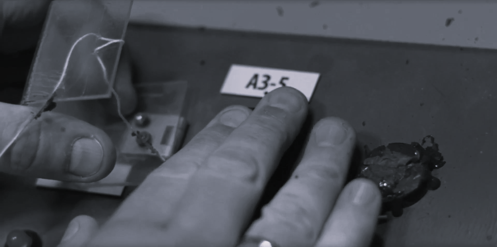
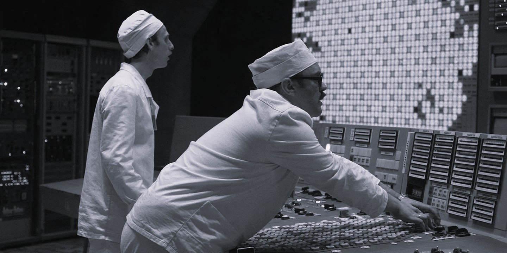
В 01:23:04, когда Акимов нажимает кнопку, реактор уже находится в заблокированном состоянии, но из-за неправильных действий и особенностей реактора типа РБМК начинается сильнейшее небезопасное развитие ситуации. В результате этого действия и последующих реакция реагентов и системы управления срабатывают неправильно, что, в сочетании с изначальной нестабильностью реактора, вызывает мощный выброс энергии.
Кнопка АЗ-5 предназначена для быстрого отключения реактора — автоматического аварийного выключения (аварийное отключение или "выключатель" реактора). Нажатие этой кнопки должно было резко остановить реакцию и снизить опасность неконтролируемого роста мощности.
26.04.86 01:23:40

В результате неправильных действий, особенно после нажатия кнопки АЗ-5, и несбалансированной реакции, мощность реактора резко повысилась.
Моментально, около 01:23:40, мощность реактора выросла в 100 раз — это суперинтенсивное увеличение энергии, которое вызвало сильнейший внутренний взрыв.
Взрыв разрушил крышу реактора, выбросив топливные элементы и радиоактивные материалы вверх.
Внутри реактора образовался огромный огненный и радиоактивный выброс, и энергоразгон привёл к разгерметизации и разрушению конструкции.
Взрыв не был внешним, а произошёл внутри реактора, распространился по его структуре и вызвал последующее катастрофическое разрушение
26.04.86 01:23:44
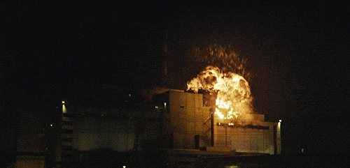
В 01:23:44, произошёл второй взрыв. Этот второй взрыв был вызван быстрым образованием водорода и других горючих газов внутри реактора после первого взрыва. В результате химической реакции и давления внутри реактора, произошёл мощный внутренний взрыв, который буквально взлетел в воздух крышу реакторного зала весом около 2000 тонн. Этот взрыв полностью разрушил верхнюю часть здания, что позволило частицам радиоактивных материалов выбрасываться с высокой скоростью в атмосферу.
26.04.86 01:24:00
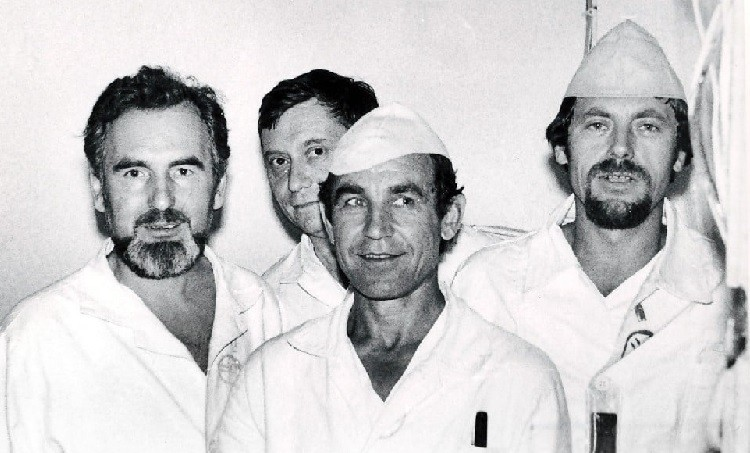
Около 01:24, непосредственно после первого взрыва на Чернобыльской АЭС, произошли первые жертвы аварии среди персонала.
Валерий Ходемчук, главный оператор циркуляционных насосов, погиб мгновенно. Его смерть связана с разрушением оборудования и высокой радиационной нагрузкой, вызванной взрывом. Он оказался в зоне непосредственного воздействия разрушенной инфраструктуры реактора, что привело к мгновенной гибели.
Владимир Шашенок (на фото крайний справа), работник пусконаладочного предприятия, получил смертельные ожоги и переломы. Его травмы возникли в результате сильных внутренних взрывных волн и разрушения, а также радиационного воздействия. Он был около реактора при аварии, и сильный удар, ударная волна и радиация вызвали у него тяжелые повреждения.
26.04.86 01:26:03
В 01:26:03 — сигнал тревоги, дежурный по пожарной части №2 Припяти Владимир Правик получает вызов: «Горит крыша машинного зала».
26.04.86 01:28:00
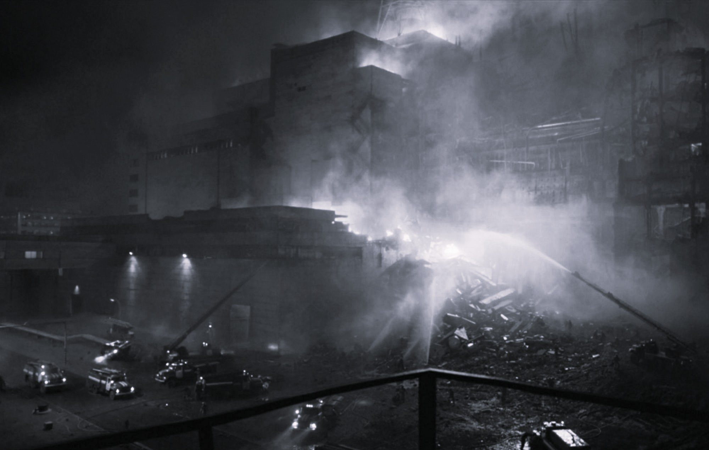
Первые пожарные расчеты, возглавляемые лейтенантами Владимиром Правиком и Виктором Кибенком, прибыли на станцию спустя считанные минуты после взрыва, около 1:30 ночи. Они вступили в борьбу с чудовищным пожаром, не зная, что имеют дело не с обычным огнем, а с горящим ядерным реактором и разбросанными кусками радиоактивного графита. Пожарные героически тушили огонь на крышах машинного зала и третьего энергоблока, предотвращая распространение катастрофы. Многие из них получили смертельные дозы радиации за короткое время, но продолжали выполнять свой долг. Их самоотверженные действия в первые часы аварии спасли мир от куда более страшных последствий.
26.04.86 01:45:00
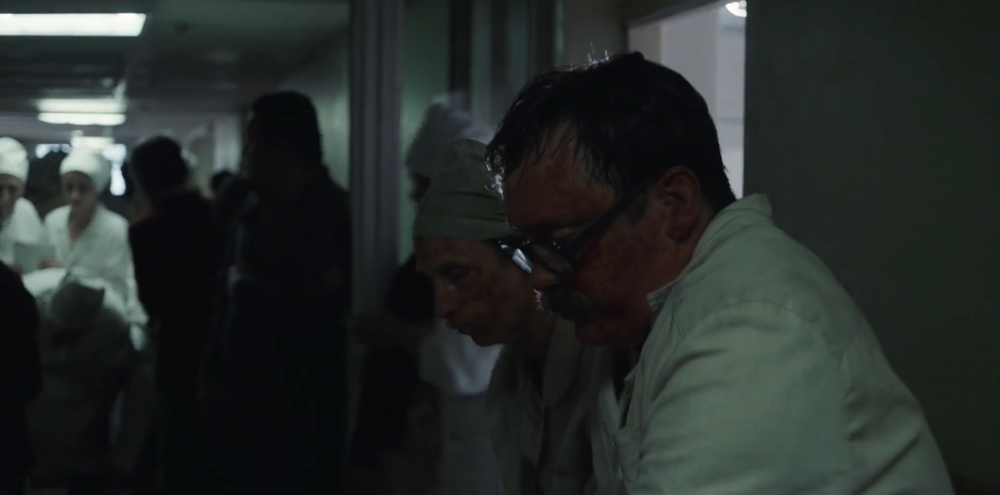
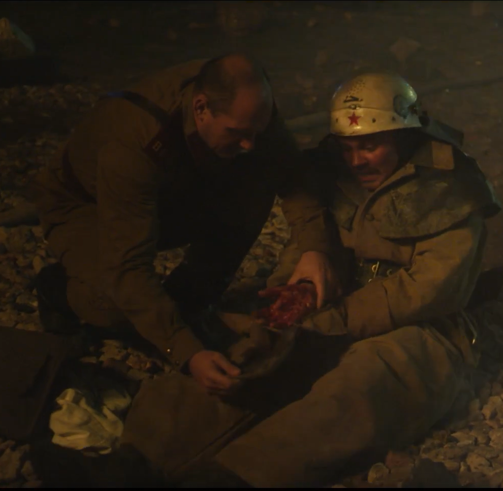
Первые симптомы острой лучевой болезни у ликвидаторов начали проявляться уже в первые часы после облучения. Пожарные и персонал станции жаловались на резкую слабость, непреодолимую тошноту и сильную, «сухую» рвоту. Характерным ранним признаком был металлический или горьковатый привкус во рту, который ощущался сразу в эпицентре катастрофы. У многих уже на пути в больницу или в первые сутки развивалась сильная гиперемия (покраснение) кожи — так называемый «радиационный загар». Эти симптомы свидетельствовали о получении смертельно высокой дозы радиации, превышающей 4-5 Грей.
26.04.86 02:30:00

К 2:30 ночи руководство станции и прибывшие специалисты всё ещё пытались осознать истинный масштаб катастрофы. Были получены первые данные с дозиметрических приборов, показавшие чудовищный и немыслимый уровень радиации в тысячах рентген в час. В бункере Гражданской обороны, куда стекалась информация, нарастало понимание, что произошла не просто авария, а полное уничтожение реактора. Отсутствие точных данных о состоянии активной зоны и продолжающийся мощный выброс радиоактивных веществ парализовали принятие эффективных решений. Стало ясно, что ситуация полностью вышла из-под контроля и является беспрецедентной.
26.04.86 04:50:00
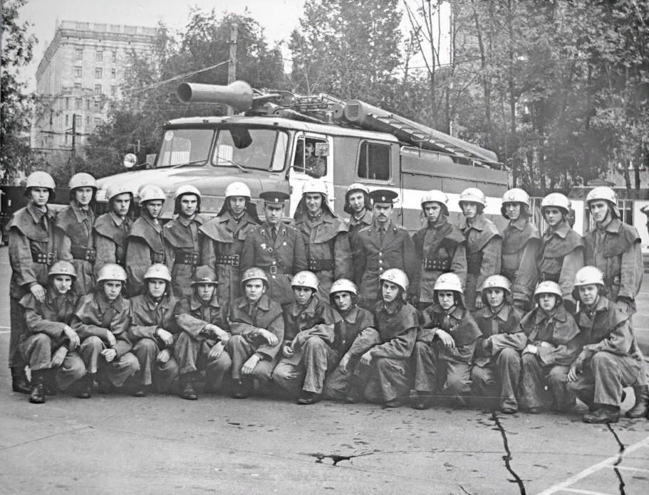
К 4:50 утра, благодаря нечеловеческим усилиям пожарных, основные очаги возгорания на крышах и в помещениях машинного зала были потушены. Однако главный пожар — в сердце разрушенного реактора, где горели около 2000 тонн графита, — продолжал бушевать, и подступиться к нему не было никакой возможности. Личный состав был измотан и уже массово проявлял симптомы острой лучевой болезни — слабость, тошноту и рвоту. В это время началась первая масштабная эвакуация пострадавших в медсанчасть и больницы Припяти. Несмотря на частичный успех, ситуация оставалась критической, так как выброс радиоактивных веществ из кратера реактора не прекращался.
26.04.86 05:00:00
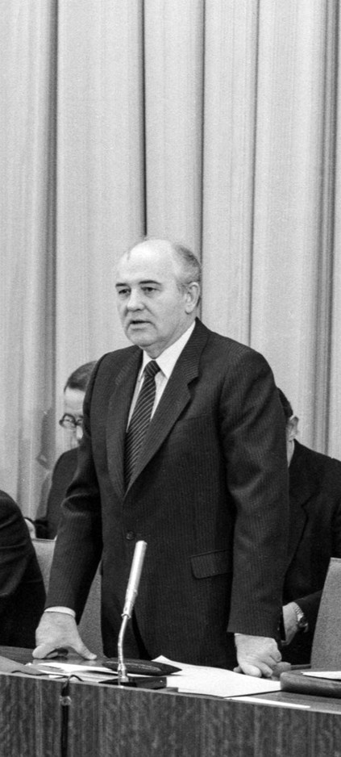
К пяти часам утра высшее руководство СССР в Москве получило первые достоверные донесения о полном уничтожении реактора на ЧАЭС. Сообщения о пожаре, который не может быть потушен обычными средствами, и о чудовищном уровне радиации не оставили сомнений в масштабе катастрофы. Стало окончательно ясно, что произошла не просто авария, а беспрецедентная национальная трагедия, требующая экстренных мер на государственном уровне. В Кремле начались экстренные совещания для координации всех сил и ресурсов страны на ликвидацию последствий. Было принято решение направить к месту аварии специальные комиссии и привлечь ведущих ученых-атомщиков и военных.
27.04.86 10:00:00
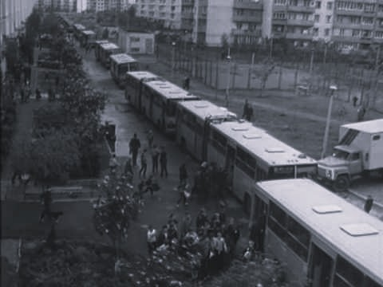
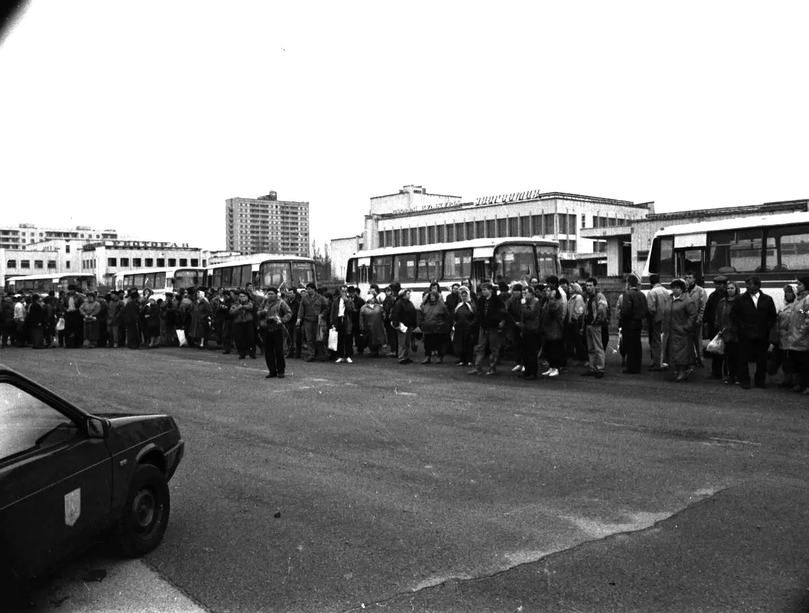
27 апреля в 10:00 утра по громкоговорителям по всему городу Припять было объявлено о начале временной эвакуации. Жителям, взяв с собой только документы, минимальный набор вещей и запас еды на три дня, было приказано собраться у своих домов для организованного вывоза. Автобусная колонна из более чем тысячи машин уже подходила к городу, чтобы вывезти около 50 тысяч человек. Люди покидали свои дома в спокойной, но напряженной обстановке, многие были уверены, что вернутся через несколько дней. Эта эвакуация, проведенная всего через 36 часов после взрыва, стала первым и самым масштабным шагом в переселении людей из 30-километровой зоны отчуждения.
28.04.86 21:00:00
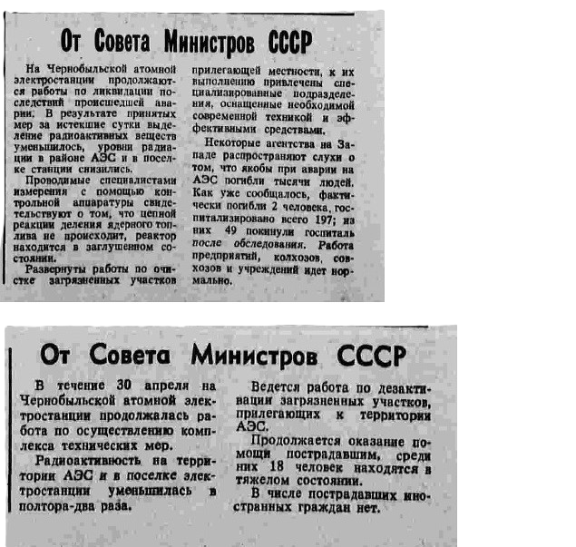
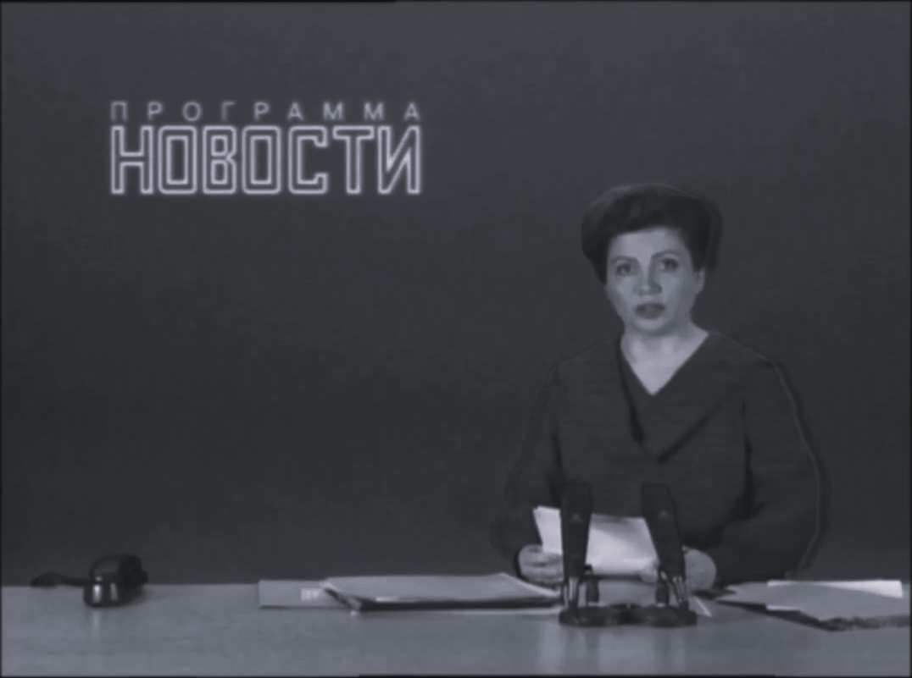
28 апреля 1986 года система радиационного контроля на АЭС «Форсмарк» в Швеции зафиксировала резкий рост радиоактивности. Шведские власти, исключив аварию на своих объектах, предположили, что источник выброса находится на территории СССР. После официального запроса Москва была вынуждена признать факт аварии, и вечером того же дня в программе «Время» прозвучало краткое сообщение ТАСС о «несчастном случае» на Чернобыльской АЭС. Это скупое заявление раскрыло миру правду о катастрофе, которая до того момента замалчивалась советскими властями. Таким образом, мир узнал о Чернобыле не из сообщений СССР, а благодаря сигналам зарубежных систем мониторинга.
Укрытие (Саркофаг)
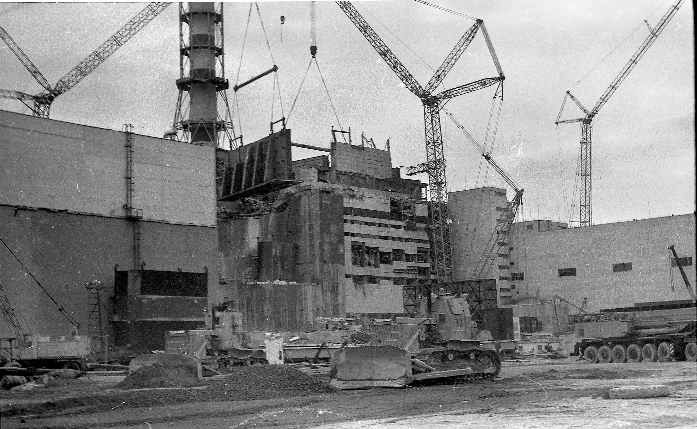
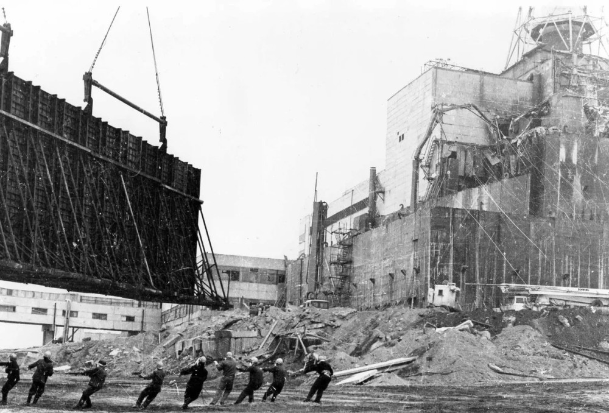
Строительство первого саркофага, известного как «Укрытие» или «Саркофаг», началось уже через несколько недель после аварии в мае 1986 года. В условиях смертельно высокого уровня радиации около 90 000 ликвидаторов в рекордные сроки, к ноябрю 1986 года, возвели гигантскую бетонно-стальную конструкцию, чтобы изолировать разрушенный реактор. Однако это было временное аварийное решение, построенное с использованием дистанционно управляемой техники и огромного человеческого труда, и его расчётный срок службы составлял лишь 20–30 лет.
Проблемы саркофага
Первый саркофаг («Укрытие») не был герметичной конструкцией, и проникновение дождевой воды стало одной из ключевых проблем его разрушения. Вода, просачивавшаяся через трещины в кровле, контактировала с радиоактивной пылью и лавообразными топливосодержащими материалами внутри, образуя высокорадиоактивные растворы. Это ускоряло коррозию металлических опор и бетонных конструкций, а также создавало риск протечек загрязненной воды в окружающую среду. Постоянное воздействие влаги в сочетании с другими факторами привело к тому, что к началу 2000-х годов угроза обрушения частей саркофага стала реальной.
Арка (Саркофаг II)
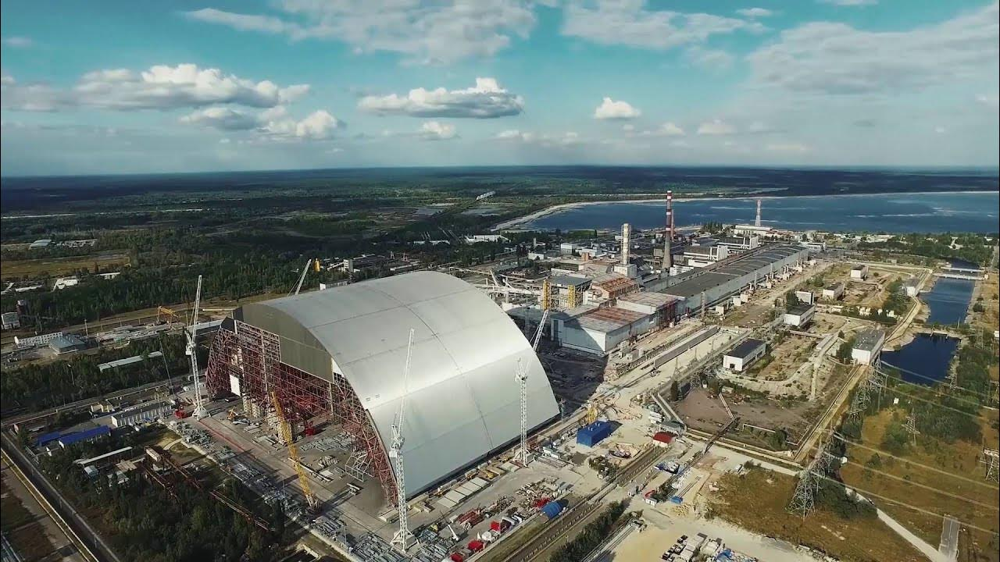
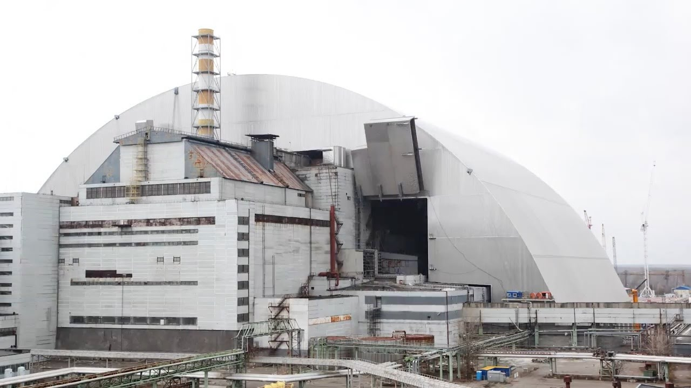
Строительство второго саркофага, официально названного «Новым безопасным конфайнментом» (НБК) или «Аркой», началось в 2012 году после многолетних международных переговоров и сбора средств. Это грандиозное арочное сооружение высотой 110 метров и длиной 165 метров было построено на специальной площадке рядом с четвертым энергоблоком, а затем в ноябре 2016 года надвинуто на старое «Укрытие» с помощью сложнейшей системы гидравлических домкратов. Конструкция, рассчитанная на 100 лет службы, полностью герметизирует разрушенный реактор, позволяя безопасно проводить работы по демонтажу нестабильных конструкций первого саркофага и извлечению радиоактивных материалов.
В настоящее время
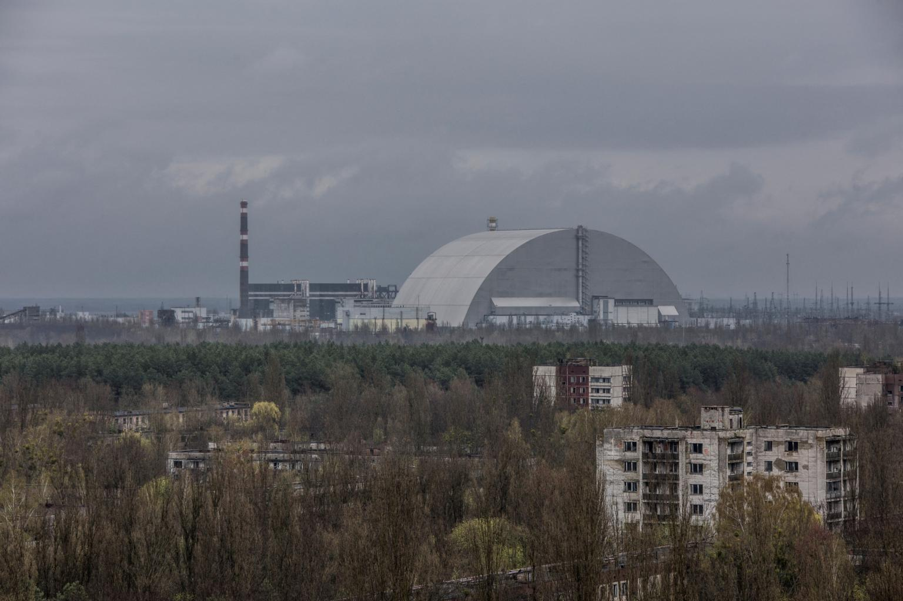
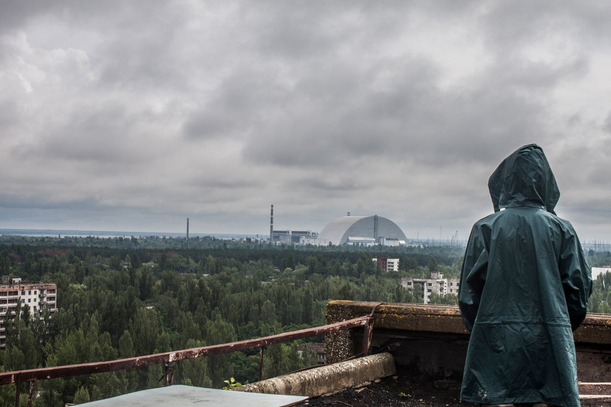
К концу 2025 года Чернобыльская зона отчуждения продолжает оставаться уникальным природно-техногенным заповедником, где природа активно восстанавливается, а уровень радиоактивности постепенно снижается. Над разрушенным четвертым энергоблоком, накрытым Новым безопасным конфайнментом (аркой), продолжаются работы по мониторингу состояния и постепенной утилизации нестабильных конструкций старого саркофага. Международные научные проекты по изучению долгосрочных последствий радиации на флору, фауну и материалы активно используют зону как уникальную лабораторию под открытым небом. Туризм, ставший важной частью экономики региона, регулируется строгими правилами безопасности, позволяя посетителям изучать трагедию и её последствия на организованных маршрутах. Память о катастрофе сохраняется в мемориальных комплексах и архивах, а уроки Чернобыля продолжают влиять на мировые стандарты ядерной безопасности и культуры. Чернобыль это единственное место где прижелись кони Проживальского.
Упоминания в литературе, кино и медиа
Чернобыльская катастрофа стала мощным источником вдохновения для создателей документального и художественного кино, наиболее известным из которых стал мини-сериал HBO «Чернобыль» (2019), вызвавший новый глобальный интерес к событиям 1986 года. В литературе тема раскрыта в фундаментальных работах Светланы Алексиевич «Чернобыльская молитва», Анатолий Дятлов «Чернобыль как это было» и в романе-документе Юрия Щербака «Чернобыль». Катастрофа также нашла своё отражени в видеоиграх (серия S.T.A.L.K.E.R., Call of Duty 4: Modern Warfare), музыке и современном цифровом медиа-арте, исследующем темы памяти, травмы и взаимоотношений человека и технологий. Эти произведения сформировали коллективную культурную память о трагедии, выйдя далеко за рамки исторического события.
Рассекреченные документы КГБ по Чернобылю